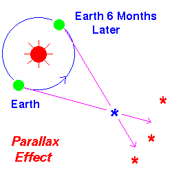
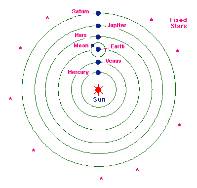
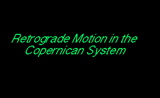

Copernicus Suggests a Heliocentric Cosmology
The Historical Context
- A sun-centered Solar System had been proposed as early as about 200 B.C.
by Aristarchus of Samos was quickly forgotten (see below).
- The Ptolemaic model held sway for about 1500 years, until the
Renaissance–at least, this was the case in Europe).
- This lack of progress reflects the stagnation which prevailed in Europe
through the Dark Ages.
- Some of the varied developments and breakthroughs around 1500 AD or
after include:
- The development of the printing press (allowing new ideas to be
widely disseminated ).
- Columbus's discovery of the New World, and the inauguration of a new
age of exploration.
- The revolutionary thinking of Martin Luther (considered heretical by
the Catholic Church).
- The artistic creations of Michaelangelo, Leonardo da Vinci,
Shakespeare, and others.
- New technological breakthroughs, such as the development of the
telescope.
In short, the time was right for free-thinking scientists to reject the old
hypotheses which had long been accepted merely because some earlier authority
had espoused them. This encouraged speculation about new models of the universe
(which, in those days, meant the Solar System: the stars were seen as merely the
background realm against which everything else happened). On the other hand,
this was the time of the Spanish Inquisition and general religious intolerance,
especially of scientific theories which sought to repudiate the doctrine that we
were in a divinely chosen place at the center of the universe. This threatening
atmosphere certainly had an effect on the pace and style of astronomical
development.
Aristarchus of Samos
The idea of Copernicus was not really new! A sun-centered Solar System had
been proposed as early as about 200 B.C. by Aristarchus of Samos (Samos is an
island off the coast of what is now Turkey). However, it did not survive long
under the weight of Aristotle's influence and the "common sense" prevailing at
the time:

- If the Earth actually spun on an axis (as required in a heliocentric
system to explain the diurnal motion of the sky), why didn't objects fly off
the spinning Earth?
- If the Earth was in motion around the Sun, why then didn't it leave
behind the birds flying in the air?
- If the Earth were actually on an orbit around the Sun, why wasn't a
stellar parallax effect observed?
The first two objections were not valid because they represent an inadequate
understanding of the physics of motion (gravity, inertia, etc.) that would only
be corrected in the 17th century. The third objection is valid, but failed to
account for what we now know to be the enormous distances to the stars. Thus,
the heliocentric idea of Aristarchus was quickly forgotten and Western thought
stagnated for almost 2000 years as it waited for Copernicus to revive the
heliocentric theory.
Copernicus revives the heliocentric idea
- Copernicus rejected the Ptolemaic theory basically because he found it
too contrived, reasoning that there had to be a simpler hypothesis which
could explain everything to his satisfaction.
- This sentiment had already been expressed in a remark attributed to
Alfonso X (1221-1284), the King of Castille and Leon. He is said to have
remarked on having the Ptolemaic system explained to him: "If the Lord
Almighty had consulted me before embarking upon Creation, I should have
recommended something simpler."'
- Though not the first to suggest the heliocentric cosmology, Copernicus
was the first to lay a serious foundation for it, which can be summarized as
follows:
- The Earth's center is not the center of the universe.
- The center of the universe is near the Sun.
- In anticipation of the objection that his model should lead to the
discovery of stellar parallax, he simply stated that the stars are
enormously far away (which would render the parallactic shift too small
to detect). Indeed, the parallax of stars was not measured conclusively
until the year 1838.
- The rotation of the Earth on its axis accounts for the apparent
daily cycles (i.e., rising and setting of the Sun and stars).
- The apparent annual cycle of movements of the Sun is caused by the
Earth revolving around the Sun.
- The apparent retrograde motion of the planets is an illusion related
to the motion of the Earth-based observer.
- Copernicus still imagined (incorrectly) that the planets move in perfect
circles (rather than ellipses), so in the end he had to use epicycles anyway
to explain some of the details of the motions.

Retrograde Motion and Varying Brightness of the Planets
By banishing the idea that the Earth was the center of the Solar System, the
Copernican model immediately led to a simple explanation of both the varying
brightness of the planets and retrograde motion:
- The planets vary in brightness because they are not always the same
distance from the Earth.
- The retrograde motion could thus be explained in terms of geometry and a
faster motion for planets with smaller orbits, as illustrated in the
following animation. A similar construction can be made to illustrate
retrograde motion for a planet inside the orbit of the Earth.
 |
|
Retrograde motion in the Copernican System |
Copernican model not completely correct
There is a common misconception that the Copernican model was more
accurate and did away with the need for epicycles. This is not true.
While Copernicus was able to rid himself of the long-held notion that
the Earth was the center of the Solar system, he did not question the
assumption of uniform circular motion. In fact, the orbits of the
planets are ellipses, not circles. As a consequence, the Copernican
model, with its assumption of uniform circular motion, still could not
explain all the details of planetary motion on the celestial sphere
without some epicycles. Furthermore, neither of the two competing
models had dramatically better accuracy than the other.
Historical myth
- The idea that the Ptolemaic system became increasingly complex and
unwieldy, with 80 or more epicycles, is likely a historical myth.
- While the exact number of "corrective" epicycles can vary depending on
the specific planet and how the model is interpreted, Ptolemy's original
model for each planet typically involved a limited number of epicycles,
often just one or two.
- The myth of the extreme complexity of the Ptolemaic model relative to
the Copernican model may have arisen later for rhetorical purposes to
emphasize the simplicity and elegance of the newer Copernican model.
- In addition, a lot of the presumed complexity in the Ptolemaic model was
introduced by subsequent astronomers who tried to improve the accuracy of
the model or address newly observed phenomena.
- What is not a myth is the fact that Copernicus was able to explain
retrograde motion (and some other things) in a more correct way and did get
us closer to our modern understanding of orbital motion. And for this, he
does deserve some credit.
The Copernican Revolution
As noted earlier, 3 incorrect ideas held back the development of modern
astronomy from the time of Aristotle until the 16th and 17th centuries:
- The Earth was the center of the Universe
- Uniform circular motion in the heavens.
- Objects in the heavens were made from a perfect, unchanging substance
not found on the Earth.
Copernicus challenged idea 1, but not idea 2. We may also note that the
Copernican model implicitly questions idea 3 that the objects in the sky were
made of special unchanging stuff. Since the Earth is just another planet, it
might not be unreasonable to suppose that other planets in the sky are made of
the same material.
His ideas remained rather obscure for about 100 years after his death. But,
in the 17th century, the work of Kepler, Galileo, and Newton would build on the
heliocentric Universe of Copernicus and produce the revolution that would sweep
away completely the ideas of Aristotle and replace them with the modern view of
astronomy and natural science. This chain of events, arguably the greatest
revolution in thinking that Western civilization has seen, is commonly called
the Copernican Revolution.
Copernicus was a reluctant revolutionary
While Copernicus's revolutionary ideas found a quick acceptance in a
scientific society ready to question theories of long standing, the following
suggests that he may not have been too eager to take credit.
- Copernicus's book was published in highly technical Latin and was thus
not accessible to a wide audience.
- Consequently, the book had little impact on the general population.
Koestler (see below) describes it as one of the worst-selling books of all
time.
- His book was published almost literally as he lay on his deathbed. It is
believed by many that he hesitated for years because he believed his ideas
would be considered heretical. The Church had elevated the ideas of
Aristotle to the level of religious dogma.
- A man named Osiander, who had been supportive of Copernicus, encouraged
the publication but prepared an anonymous prologue which was meant to defuse
criticism or prosecution by explaining that the ideas contained in the book
were clearly nonsensical and not to be taken seriously!
Suggested reading (for personal enrichment):
"The
Sleepwalkers'' by
Arthur Koestler. In contrast to the portrait of a revolutionary that many
authors paint for Copernicus, Koestler portrays him as a coward who was
reluctant to publish his work due to a crippling fear of ridicule.
"The
Book Nobody Read" by Owen Gingerich. With some interesting detective
work, Gingerich challenges the common perception that Copernicus's book was
largely ignored upon its publication in 1543. He argues, through extensive
research and examination of marginal notes and annotations in surviving copies
from all over the world, that the book was indeed read and studied by many
astronomers and scholars of the time.